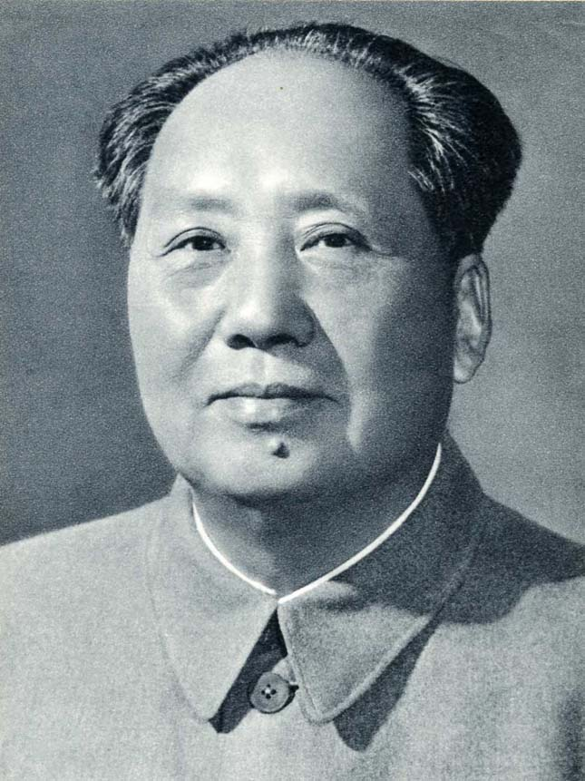
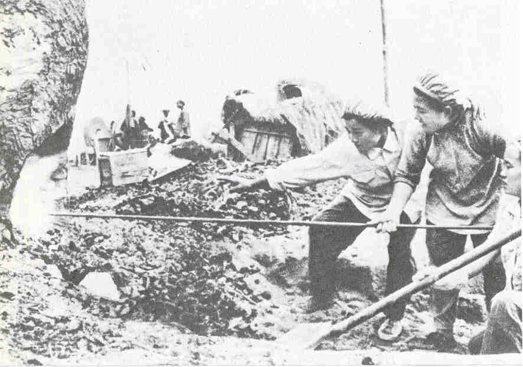

Mao Ce-tung
Mao jómódú parasztcsaládba született. Fiatalon részt vett a kínai polgári forradalomban. A Kínai Kommunista Párt 12 alapítójának egyike. Politikai ellenfelei legyőzése és a második világháború után 1949-ben megalakult a Kínai Népköztársaság, melynek vezetője lett (Tudj meg többet Mao Ce-tung életéről).
1954-ben az alkotmánymódosításnak köszönhetően államfő lett. Ekkor szovjet mintára belekezdett a túlzott mértékű iparosításba. Főként a Szovjetunióból érkező gyárakra és technológiákra alapozta tervét. Nehézipari, hadászati és nukleáris fejlesztéseket kaptak a szovjetektől(Ez volt a "Nagy ugrás"). Ezért kína mezőgazdasági termékekkel fizetett mindannak ellenére, hogy az országban nagy éhínség pusztított. Ez az élelmiszer központi elvonásának köszönhető.

1966-ban meghirdette a "nagy proletár kulturális forradalmat", aminek keretein belül akart leszámolni a "kommunizmus ellenségeivel" és politika ellenfeleivel. 36 millió embert kezdtek el üldözni, akik közül 1,5 milliót meg is öltek. Bár ez közel sem annyi, mint ahányan a "Nagy ugrás" által okozott éhínségekbe haltak bele, de így is rengeteg.

Egyes becslések szerint a Mao tevékenységének következtében elhunytak száma több, mint az ezen a listán szereplő többi ember áldozatai együttvéve. Gyakorlatilag csonthalmazra fektette le a modern kína alapjait.